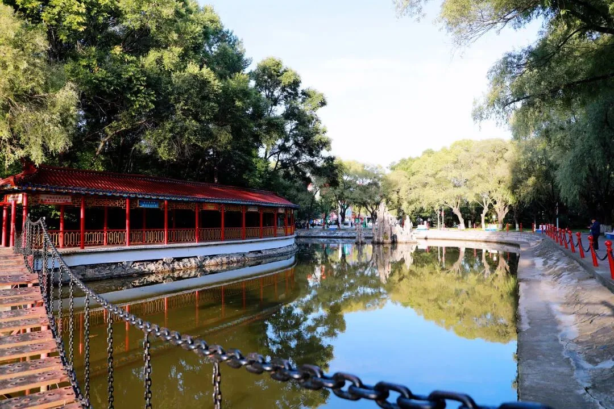

景点介绍
公园始建于2001年，2005年修整，占地约7.6公顷。园内有儿童游乐、游憩观景、休闲健身和生态园林四个区域。红栏长廊沿湖伸展，白色石拱桥跨过水面，亭子和树荫散布在水岸。
园内的中苏友谊纪念碑纪念两国合作建设友谊农场的历史。另一座碑纪念农场早期负责人王正林，他在王操犁之后担任场长。


县城散步 · 友谊镇
友谊公园位于友谊镇西一路与北五道街交会处，正门与友谊博物馆隔路相望。湖边的长廊、石拱桥和两座纪念碑，是公园里辨识度最高的景致。

公园始建于2001年，2005年修整，占地约7.6公顷。园内有儿童游乐、游憩观景、休闲健身和生态园林四个区域。红栏长廊沿湖伸展，白色石拱桥跨过水面，亭子和树荫散布在水岸。
园内的中苏友谊纪念碑纪念两国合作建设友谊农场的历史。另一座碑纪念农场早期负责人王正林，他在王操犁之后担任场长。
